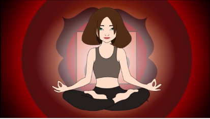
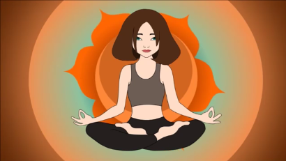
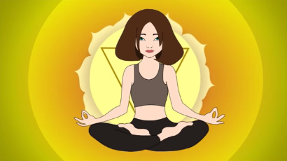
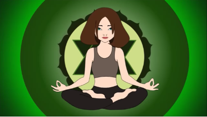
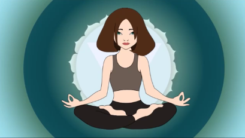
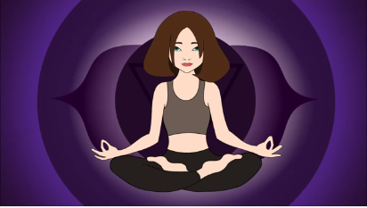
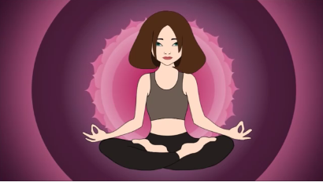
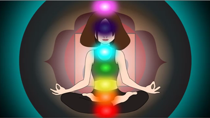

HOME
SCIENCE OF MEDITATION
BENEFITS
GUIDED MEDITATION
HOW TO MEDITATE
CONTACT
Guided Meditation
Here are some guided meditation video links.

Root chakra guided meditation

Sacral chakra guided meditation

Solar plexus guided meditation

Heart chakra guided meditation

Throat chakra guided meditation

Third eye chakra guided meditation

Crown chakra guided meditation

Complete chakra guided meditation